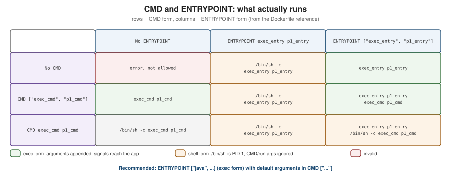

Dockerfile Fundamentals
|
This content was generated with the assistance of AI and should be verified against the official documentation before being relied on in production. |
A Dockerfile is a text file of instructions that BuildKit executes, top to bottom, to produce an image. Chapter 3 of
Learning Docker surveys every instruction as it existed in Docker 1.5; this page does the same for the current
Dockerfile frontend (docker/dockerfile:1, executed by BuildKit 0.33.x under Docker Engine 29.8.x and Buildx
0.37.x), flags which parts of that survey are obsolete, and adds everything introduced since — parser directives,
RUN --mount, COPY --link/--parents/--exclude, here-documents and build checks. The build cache and
multi-stage builds, which shape how a Dockerfile should be ordered, get their own page:
Build Cache and Multi-Stage Builds.
A first Dockerfile
# syntax=docker/dockerfile:1
FROM eclipse-temurin:25-jre
WORKDIR /app
COPY target/orders-service.jar app.jar
EXPOSE 8080
USER 10001
ENTRYPOINT ["java", "-jar", "/app/app.jar"]./mvnw -q package -DskipTests
docker build -t orders-service:dev .
docker run --rm -p 8080:8080 orders-service:devDerived from Dockerfile overview. This works, but it re-copies a fat JAR as one layer and builds the JAR outside Docker; the production-grade version is on Java and Spring Boot Images.
How a build works
(directory minus .dockerignore)"] --> cli["docker build
(Buildx client)"] df["Dockerfile"] --> cli cli -->|"sends context and definition"| bk["BuildKit"] bk --> fe["Dockerfile frontend
syntax=docker/dockerfile:1"] fe --> llb["LLB build graph"] llb --> solver["Solver: cache lookup,
parallel steps"] solver --> l1["Layer: FROM base"] solver --> l2["Layer: RUN / COPY / ADD"] solver --> cfg["Config: CMD, ENV, USER,
EXPOSE, LABEL"] l1 --> img["Image (manifest + config + layers)"] l2 --> img cfg --> img
Only RUN, COPY and ADD create filesystem layers; every other instruction only changes the image
configuration. Derived from Docker Build overview.
Parser directives
Parser directives are special comments that must appear at the very top of the file, before any instruction or blank line.
| Directive | Purpose |
|---|---|
|
Selects the Dockerfile frontend image. |
|
Changes the escape character from |
|
Configures build checks: skip named rules ( |
Instruction reference
FROM
FROM [--platform=<platform>] <image>[:<tag>|@<digest>] [AS <name>] starts a build stage. A Dockerfile can have
several FROM lines — each begins a new stage, and AS names it for COPY --from and --target (see
multi-stage builds). FROM scratch starts from an
empty filesystem. ARG is the only instruction allowed before the first FROM, to parameterise the base image:
# syntax=docker/dockerfile:1
ARG JAVA_VERSION=25
FROM eclipse-temurin:${JAVA_VERSION}-jreDerived from Understand how ARG and FROM interact.
--platform=$BUILDPLATFORM pins a stage to the machine doing the build, which is how cross-compilation works in
multi-platform builds (see BuildKit and Buildx).
RUN
RUN executes a command in a new layer on top of the current image. It has two forms:
-
Shell form —
RUN apt-get update && apt-get install -y curl— runs through/bin/sh -c, so variables, pipes and&&work. -
Exec form —
RUN ["/usr/bin/mvn", "-B", "package"]— a JSON array executed directly, with no shell processing.
The options that make RUN powerful are BuildKit additions:
| Option | Effect |
|---|---|
|
A persistent cache directory across builds (Maven’s |
|
Bind-mounts files from the context or another stage without copying them into a layer. |
|
Exposes a secret as a file (default |
|
Forwards the host’s SSH agent, for example to clone private Git repositories. |
|
A scratch in-memory filesystem for this step. |
|
Controls network access for the step ( |
|
Runs the step without the sandbox (needs the |
|
Gives the step access to a CDI device, for example a GPU (Dockerfile 1.27 or later). |
# syntax=docker/dockerfile:1
FROM eclipse-temurin:25-jdk AS build
WORKDIR /src
COPY . .
RUN --mount=type=cache,target=/root/.m2 ./mvnw -B -ntp package -DskipTestsDerived from RUN and
RUN --mount. Every mount type is explained with
examples on Build Cache and Multi-Stage Builds.
Here-documents
RUN, COPY and ADD accept here-documents, which replace long && \ chains with a readable script that still
produces one layer:
# syntax=docker/dockerfile:1
FROM debian:trixie-slim
RUN <<EOF
set -eu
apt-get update
apt-get install -y --no-install-recommends curl ca-certificates
rm -rf /var/lib/apt/lists/*
EOF
COPY <<EOF /etc/app/defaults.properties
server.port=8080
EOFDerived from Here-documents.
CMD and ENTRYPOINT
ENTRYPOINT is the executable the container runs; CMD provides default arguments to it — or, when there is no
ENTRYPOINT, the default command itself. docker run <image> <args> replaces CMD; docker run --entrypoint
replaces ENTRYPOINT. Both have a shell form and an exec form, and the combination decides what actually runs:

No ENTRYPOINT |
ENTRYPOINT exec_entry p1_entry |
ENTRYPOINT ["exec_entry", "p1_entry"] |
|
|---|---|---|---|
No |
error, not allowed |
|
|
|
|
|
|
|
|
|
|
Derived from Understand how CMD and ENTRYPOINT interact. The practical rules:
-
Use the exec form for
ENTRYPOINTandCMD. In shell form the process is/bin/sh, which becomes PID 1 and does not forwardSIGTERMto your application, sodocker stopwaits for the timeout and then kills it (see graceful shutdown). -
A shell-form
ENTRYPOINTignoresCMDand anydocker runarguments entirely. -
For an image that behaves like a command, put the program in
ENTRYPOINTand its default flags inCMD.
COPY and ADD
COPY copies files from the build context, another stage (--from=<stage>) or an image
(--from=<image>) into the image. ADD does the same and can also fetch remote URLs and Git repositories and
auto-extract local tar archives. Prefer COPY; use ADD only when you need its extra behaviour, and then verify
remote content with --checksum.
| Flag | Effect |
|---|---|
|
Sets ownership of the copied files (otherwise root). |
|
Sets permissions, octal or symbolic. |
|
Copies into an independent layer that does not depend on previous layers, so changing the base image does not invalidate it and the layer can be rebased without re-copying. |
|
Preserves the parent directories of the source paths ( |
|
Excludes matching paths from the copy. |
|
Verifies a remote HTTP artifact ( |
|
Keep |
# syntax=docker/dockerfile:1
FROM eclipse-temurin:25-jre
ADD --checksum=sha256:bbf83c151b6400709e2f225bdd07a04f839d9d13b8b93464241333fd25d3e3ba \
https://repo1.maven.org/maven2/io/opentelemetry/javaagent/opentelemetry-javaagent/2.31.1/opentelemetry-javaagent-2.31.1.jar \
/opt/otel/opentelemetry-javaagent.jar
COPY --link --chown=10001:10001 --exclude=*.md target/app/ /app/WORKDIR
Sets the working directory for subsequent RUN, CMD, ENTRYPOINT, COPY and ADD, creating it if needed.
Always use it instead of RUN cd … && …; relative `WORKDIR`s are resolved against the previous one.
ENV and ARG
ARG |
ENV |
|
|---|---|---|
Available during the build |
Yes, from its declaration to the end of the stage |
Yes, from its declaration |
Present in the running container |
No |
Yes — persisted in the image configuration |
Set from outside |
|
|
Scope |
Per stage; an |
Inherited by later stages built |
Changing a build argument’s value invalidates the cache from the first instruction that uses it. BuildKit
predefines platform arguments (TARGETPLATFORM, TARGETOS, TARGETARCH, BUILDPLATFORM, …), proxy arguments
(HTTP_PROXY, NO_PROXY, …) that are exempt from the cache, and BUILDKIT_* arguments that tune the build.
Never pass credentials through ARG or ENV. ENV values are stored in the image, and ARG values appear in
the build history. Use RUN --mount=type=secret (see
Image Best Practices and Supply-Chain Security).
Derived from Build variables.
EXPOSE
EXPOSE 8080/tcp documents which ports the application listens on. It does not publish anything; publishing is
done at run time with -p (or -P, which publishes every exposed port to a random host port). See
Networking.
USER
Sets the user (and optionally group) for subsequent RUN instructions and for the running container. Use a
numeric UID, create it if the base image does not have one, and switch to it before ENTRYPOINT:
# syntax=docker/dockerfile:1
FROM eclipse-temurin:25-jre
RUN groupadd --system --gid 10001 app && useradd --system --uid 10001 --gid app --no-create-home app
USER 10001:10001Derived from USER.
VOLUME
VOLUME /var/lib/data marks a path whose data should live outside the container’s writable layer; Docker creates
an anonymous volume there if none is mounted. Changes made to that path by later RUN instructions are discarded.
Declaring volumes in the image surprises users more often than it helps; prefer documenting the path and letting
the operator mount a named volume (see Storage).
LABEL (and the deprecated MAINTAINER)
LABEL key="value" … adds metadata to the image configuration; use the org.opencontainers.image.* keys (see
labels and annotations). MAINTAINER,
which _Learning Docker still uses, is deprecated — write LABEL org.opencontainers.image.authors="…" instead.
HEALTHCHECK
# syntax=docker/dockerfile:1
FROM eclipse-temurin:25-jre
# the JRE image does not ship curl, so install it for the check
RUN apt-get update \
&& apt-get install -y --no-install-recommends curl \
&& rm -rf /var/lib/apt/lists/*
COPY target/app.jar /app/app.jar
EXPOSE 8080
ENTRYPOINT ["java", "-jar", "/app/app.jar"]
HEALTHCHECK --interval=30s --timeout=3s --start-period=30s --start-interval=2s --retries=3 \
CMD ["curl", "-fsS", "http://localhost:8080/actuator/health/readiness"]Docker runs the command periodically inside the container and reports starting, healthy or unhealthy in
docker ps; Compose’s condition: service_healthy and Testcontainers' Wait.forHealthcheck() rely on it. The
command must exist in the image (a JRE-only or distroless image may not ship curl). HEALTHCHECK NONE disables a
check inherited from the base image. Derived from HEALTHCHECK.
STOPSIGNAL, SHELL and ONBUILD
-
STOPSIGNAL SIGTERMsets the signaldocker stopsends first (the default isSIGTERM; some servers wantSIGQUITorSIGINTfor a graceful stop). -
SHELL ["/bin/bash", "-o", "pipefail", "-c"]changes the shell used by shell-form instructions — useful to make pipelines fail properly, and on Windows images to switch to PowerShell. -
ONBUILD <instruction>registers an instruction to run when another image uses this one as its base. It hides behaviour from the downstream Dockerfile; avoid it in new images.
The build context and .dockerignore
docker build <context> sends the context — a local directory, a Git URL or a tarball — to BuildKit. Only files in
the context can be copied, and BuildKit transfers only the files a build actually references. A .dockerignore
file at the context root excludes paths up front, keeping builds fast and secrets out of the image:
# .dockerignore for a Maven project
.git
.idea
*.iml
target/
!target/*.jar
**/*.log
.env
compose.yamlDerived from Build context. A Dockerfile-specific ignore file
(Dockerfile.dockerignore, next to Dockerfile) takes precedence when present.
docker build essentials
docker build -t orders-service:1.4.0 . # context = current directory, ./Dockerfile
docker build -f docker/Dockerfile.native -t orders:native . # a different Dockerfile
docker build --target build -t orders:build . # stop at the stage named "build"
docker build --build-arg JAVA_VERSION=25 -t orders . # set an ARG
docker build --no-cache -t orders . # ignore the cache for every step
docker build --progress=plain -t orders . 2>&1 | tee build.log # full, unfolded step output
docker build --check . # run build checks only, do not buildDerived from docker buildx build, which docker
build aliases. --progress=plain is invaluable when a RUN step fails: the default TTY output folds each step’s
log.
What changed since the 2015 books
| 2015 practice | Current practice |
|---|---|
|
|
No |
|
Long |
Here-documents, |
One stage per Dockerfile, separate "build" images |
Multi-stage builds (Docker 17.05 and later) |
The legacy builder |
BuildKit (default since Docker 23.0), with build checks |